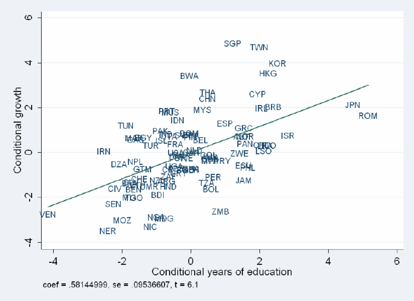
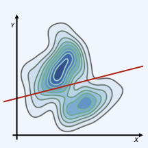
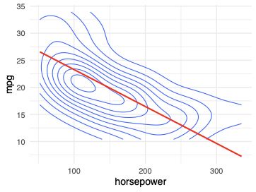
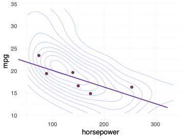
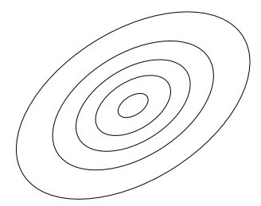

Introduction to Regression
UC Berkeley, MIDS w203

- If you open any academic paper that uses data today - there’s a quite good chance that you’ll find a linear regression inside. If you don’t find a regression, you might find a technique that’s based on linear regression. Even the most cutting edge machine learning techniques - most still contain elements of linear regression.


The Regression Algorithm
Idea: Draw a line given a sample of data
- So regression is absolutely foundational to modern data science.
- And, in one sense it’s easy.
- The basic idea is quite simple
- The algorithm is quite simple - I can show you how to calculate the line in a few minutes. But just drawing a line isn’t statistics - anyone can draw a line, but a line is just a line.
- After you draw a line, there are two questions you need to ask…
standout
What does this line mean ?
Under what assumptions?
- What’s interesting is that even though everyone agrees on how to compute a regression line, people have different answers to these questions.
- There’s a statistical perspective, a structural perspective, a machine learning perspective…
- Which do you need to learn? All of them. As a data scientist, you’ll need to converse with many types of people…
- But you have to start somewhere. We have a very strong opinion about this - we’re going to teach you what we think is the most fundamental perspective on regression.
The Mechanics of OLS Regression
- The OLS algorithm
- Statistical assumptions
- Statistical guarantees
- You can think of this unit as covering the mechanics of linear regression. The algorithm itself, statistical assumptions, and statistical guarantees. This is a foundation, and later on, we’ll move on to applications. let’s get started.
Unit Plan
Goals of This Week
At the end of this week, you will:
- Understand that regression is the plug-in estimator of the best linear predictor (BLP).
- Understand overall model fit and use an F-test to assess whether a candidate model is performing better than a baseline model.
- Understand how to appropriately interpret regression coefficients, including measures of certainty and uncertainty, and use Wald tests to assess whether coefficients are different from zero.
- Lay a foundation for careful interpretation.
- When we discuss fitting, we’re going to reason from the closed-form solutions. But, we will also nod to how we might produce estimates through a brute-force, numeric optimization route.
Reading: The Golem of Prague
Reading: The Golem of Prague
This is a placeholder for a reading call. We’re just placing it here for organization. - Read Sections 1.0 and 1.1 of Statistical Rethinking , which we have provided a copy of in PDF form from the publisher. - Statistical Rethinking is a great book and reference that you should consider later in your data science and statistics path.
Regression, a Statistical Golem
Regression, a Statistical Golem
- Regression—like all models—is a tool.
- We put tools to use toward a data scientific purpose; however, tools are only tools.
- Use of a straight-edge, scale, and T-square doesn’t make one an architect any more than use of { } or { } makes one a data scientist.
- A major point in 201, and again here in 203 is that we cannot, under any circumstance – whether question formation, ethics, data viz, model architecture – be unthinking as data scientists. Because our models
- In the case of regression, it is
- The tasks that we pursue require
- But, combined with how we
The Machinery of OLS Regression
- OLS regression is a plug-in estimator for the best linear predictor (BLP).
- The BLP is the lowest mean squared error (MSE) estimator, out of all linear functions.
- On the one hand, there is little special about regression.
- It is a simple formula, with a closed form solution that is both easy to fit (because of squared loss). It just so happens that minimizing MSE happens to be desirable in many cases.
- But this is quite literally the beginning and end of what it does. If we wanted to minimize quadratic squared error; or absolute deviations, we would derive another estimator.
- What if we wanted to make a model that was usefully understandable by a stakeholder for descriptive purposes? What if we wanted to identify a causal effect? There is no guarantee that minimizing MSE will accomplish these goals. We as scientists have to carefully define the question and task that we are undertaking.
Applications of OLS Regression
Regression is fantastically versatile - Under some circumstances, regression has explainable internal weights (coefficients) that are of interest. - Under other circumstances, regression identifies causal effects. - Under many circumstances, regression is the de facto baseline estimator.
- But, on the other hand…
Elements of a Linear Model
Elements in a Linear Model
A __linear model__ is a representation of a random variable
($Y$) as a linear function of other random variables
$\bs X = (X_1,X_2,...,X_k)$.- Before we dive into OLS regression, let’s discuss linear models more broadly.
- By a linear model, we mean that we have one random variable
- These variables go by many different names.
- In ML, Y is usually the target, X’s are features
- In classical stats, dependent and independent variables, or sometimes RHS and LHS are more popular
- Those are ok, but we don’t like that dependent variable sounds like a causal effect. As we’ll discuss, we can’t just assume that a linear model represents any kind of causal relationship. For that reason, we’ll try to stick with the more prediction-focused terms, like target and features
The Linear Model Formula
\[\begin{align*} \hat{Y} &= g(X_1,X_2,...,X_k)\\ &=\beta_0 + \beta_1 X_1 + \beta_2 X_2 + ... + \beta_k X_k \end{align*}\]
- Here’s what the linear model looks like
- We may write g of the X’s to emphasize that this is a function
- The number that comes out of the function is called a prediction
- Since we’re putting random variables into the function, the output is also a random variable
- We’ll label the prediction
- \(\beta_{k}\)
- Depending on the type of linear model building that you’re doing, either
A Linear Model Example
[ = 2 + 1 + 2 ]
Review: Outcome, Prediction, and Error
Review: Outcome, Prediction, and Error

- Here’s a picture of a joint distribution, with just one X and Y.
- And here’s a line representing a linear model.
- Is this a good model? Doesn’t look great to my eyes, but that’s actually intentional. We haven’t said anything about what makes a good model yet!
- If I imagine drawing a point

Concept Check: Making Predictions with a Linear Model
Concept Check: Making Predictions with a Linear Model
- Students will be given a model and (x,y) and compute prediction and error.
Metric Inputs
Interpreting Model Weights (Coefficients)
[ =_0 + _1 X_1 + _2 X_2 + … + _k X_k ]
- If \(X_{i}\) changes by \(\Delta X_{i}\) units, the predicted value of the target, \(\hat{Y}\) changes by \(\beta_{i} \cdot \Delta X_{i}\) units.
- If \(X_{i}\) and \(X_{j}\) change by \(\Delta X_{i}\) and \(\Delta X_{j}\) respectively, then the predicted value of the target, \(\hat{Y}\) changes by \((\beta_{i} \Delta X_{i}) + (\beta_{j} \Delta X_{j})\) . Ceteris paribus: all else equal
- How do we interpret the betas in a linear model?
- A linear model is a
- To get an idea, try taking the partial derivative of the predicted outcome, with respect to some
- This means that you can think of
Interpreting Model Coefficients: Example
Does this model say peacocks with longer tails fly slower?
[ = 4.3 - 1.2 + 0.8 ]

- Here’s a model that we developed to describe the flying speed of male peacocks.
- Notice the coefficient on the tail length variable:
- Does this mean that peacocks with longer tails are slower flyers?
- The answer is no - we have to remember ceteris paribus
- The correct interpretation is that peacocks with1 unit longer tails, but the same muscle mass, are predicted to fly 1.2 units slower. But what about peacocks with longer tails as a whole? We just don’t know. You can imagine that peacocks with longer tails also tend to have more muscle mass. Maybe they fly faster.
Categorical Inputs
Categorial Inputs, Part I
What if, rather than numeric inputs, we had categorical inputs?
- Information that says it belongs to one category or another, but doesn’t provide a value to that category?
- Reminder : There are four ``levels’’ of information – (1) Categorical; (2) Ordinal; (3) Interval; (4) Ratio
Categorical Inputs, Part II
How is this represented in a model?
- The model aims only to distinguish one category from another, and so switches from stacked labels to one-hot encoded , or dummy variables.
- Practically, in this model, one of the labels is identified as the baseline , default , or omitted category
- Indicators for alternate levels mark changes from the baseline to the alternate level.
Categorical Inputs, Part II
Learnosity: Interpreting Model Weights
This is a placeholder for a Learnosity activity. - have to change this, so it’s about interpretation, not prediction - In this activity, students will be given a fitted model that conforms with the data that they have for the peacock - They will make predictions first from the data, and then - Second, from newly created data to see how the predictions change
Part 2: Selecting a Linear Model with OLS
OLS is Regression for Estimating the BLP
Fitting Linear Models
Linear regression: an algorithm for fitting a linear model given a sample of data
- Ordinary least squares (OLS) regression
- Quantile regression
- Regularized regression - Lasso
- Ridge regression
- Where do linear models come from? Up till now, we’ve just made up numbers.
- But what we really want to do is choose the model using data.
- There are a lot of different algorithms that you can use to choose a linear model. We’ve listed a few famous ones here, but there are many options.
- If you start with a different objective, you will design a different algorith..
- Out of these, the most foundational type of regression is OLS, so what is it designed to do?
Understanding OLS
- The most well-known type of linear regression
- A foundation for many other types of regression
- Key goal: estimating the best linear predictor (BLP)
- In this unit, our main topic is a type of regression called OLS
- A key goal is estimating the BLP. Let’s review what the BLP is and why it’s so great.
The BLP Minimizes Expected Squared Error

The Best Linear Predictor
The best linear predictor is defined by the function
\[g(\mathbf{X}) = \beta_{0} + \beta_{1}X_{1} + \beta_{2} X_{2} +
\dots + \beta_{k}X_{k}\]
where $\boldsymbol{\beta} = (\beta_0, \beta_1,...,\beta_k)$ are
chosen to minimize the expected squared error.
\[
\min_{(b_{0}, \dots, b_{k})}
\E\big[ (Y - (b_0 + b_1 X_1 + ... +b_k X_k))^2\big]
\]- If we are working with a best linear predictor, then we know we have a function that must take the following form:
- Remember the formula for the BLP in the single variable case; it is a more complex now – complex enough that we can’t work through the statement, but it is just a bit more than
Great Things About the BLP
The best linear predictor…
- minimizes MSE out of all linear models.
- captures an infinitely complex distribution in a few parameters.
- can be estimated with much less data compared to a probability density.
- is easy to reason about.
- is easy to communicate to others, helping knowledge advance.
- has a closed form solution that is relatively easy to work with.
Applying the Plug-In Principle

- We can’t see the joint distribution, so we can’t analyze the true error
- But we do have this data, so can use a plug-in estimate
- Instead of an expectation, we’ll look at the distance to each data point and take an average
- These distances are called residuals
OLS Regression Is the BLP Plug-In Estimator
The OLS regression line is given by
\[
\hat{g}(\mathbf{X}) = \hat{\beta}_{0} + \hat{\beta}_{1}X_{1} + \hat{\beta}_{2}X_{2} +
\dots + \hat{\beta}_{k}X_{k}
\]
where $\boldsymbol{\hat \beta} = (\hat \beta_0,\hat \beta_1,...,\hat \beta_k)$ are given by
\[
\min_{(b_{0}, \dots, b_{k})} \frac{1}{n} \sum_{i=1}^n \big(Y_i
- (b_0 + b_1 X_{[1]i} + ... + b_k X_{[k]i}) \big)^2.
\]- The general plug-in principle says that we write down the sample analogue for the population quantity that we’re interested in. Lets do just that.
- Basically, we had an expectation in the formula before, but now we replace that by taking an average over the n datapoints.
- Instead of minimizing squared error, we are now minimizing squared residuals
- The hope is that by doing this, we’ll get a good estimator. But we still have to prove it. we’ll do that soon.
An Analogy with the Mean
Coming Up Soon…
We still have to:
- solve the minimization problem
- show that OLS is consistent for the BLP
- Here’s what we have to do.
- First, we have to get the equation into a more useful form. We want to minimize the sum squared residuals. we have to actually solve that minimization problem and write down the solution.
- Second, we have to show that it really has good statistical properties
- Once we do all that, we’ll have a great justification for the OLS algorithm. it is a consistent estimator for the model that minimizes MSE.
Learnosity: You Minimize It!
Learnosity: You Minimize It!
Note: This is a Learnosity Activity. We’re just placing it here for organization.
This is the activity that is currently coded .
Note that we would like to expand this to ask students to work through several examples in a row. Presently we have a single example made; expanding this to a broader set is relatively easy. In the expanded set, we should ensure that we have some complexity in the data—e.g., a sine curve.
Reading: OLS Regression Estimates the BLP
Reading: Linear Regression is a Plug-in Estimator for the BLP
Note: this is a reading call, we’re just placing it here for organization.
Read pages 143–147 of Foundations of Agnostic Statistics.
Choosing Assumptions for OLS Regression
When Does OLS “Work”?
The OLS regression line is
[ () = {0} + {1}X_{1} + {2}X{2} + + {k}X{k} ]
where \(\boldsymbol{\hat{\beta}}\) are chosen to minimize squared residuals.
Different assumptions
\(\Downarrow\)
Different statistical guarantees
- You’ve already seen one definition of OLS regression.
- OLS is just an algorithm. No matter what the situation is, you can always run it and get some numbers out. (It is a Golem!)
- So you might want to know, ``What assumptions are needed for OLS regression to work?’’ It’s not so easy - there are different sets of assumptions out there.
- Depending on which assumptions you choose, you get different guarrantees.
- We’re going to teach you two main sets of assumptions.
standout - More data \(\implies\) less restrictive assumptions - More data \(\implies\) easier to assess assumptions
- First, a very general point: the more data you have, the better off you are.
- More data helps in two major ways.
- First, we don’t need as many assumptions with more data. That’s because of asymptotics - statistics behave in predictable ways when
- Second, having more data helps you to assess your assumptions. It’s hard to defend an assumption of normality when you have 5 data points. if you have 100, you have an argument.
OLS in a Large Sample
Just two assumptions:
- I.I.D.- Unique BLP exists
Asymptotic behavior as \(n\to\infty\) provides considerable guarantees.
- With a lot of data,
- All we need is that the data is distributed i.i.d., and that there is a unique solution to the BLP.
- If there isn’t a unique solution, then we just can’t solve for it!
- When you package these two assumptions together, we’ll call them the large-sample model.
- That’s not an official name, so don’t use it outside of this class. But it will help us to give it a name.
OLS in a Small Sample
- A parametric model—fully specifies \(f_{Y|X}\)
- Traditional starting point for regression
- Even with extensive transformations, may be hard to justify assumptions
Guarantees come from strict assumptions.
- We want to draw your attention to the fact that we’re presenting the large-sample (asymptotic) version of regression this week. In the future, we will talk about the smaller sample variant known as the
- Whereas we get
OLS in Very Small Samples
Special difficulties when \(n < \sim15\) - No help from asymptotics - Not enough data to assess CLM
- A framework for testing (restrictive) null hypotheses
- I want to say a few words about very small samples.
- very small isn’t a technical phrase, but think
- First, should you
- The problems really compound in this range.
- First, you get no help from asymptotics, which means that you need to meet the CLM exactly.
- Second, you don’t have enough data to assess the CLM. even if things look ok, how can you convince someone when you only have 10 datapoints?
- One suggestion: if you need to work with very small data, especially from experiments, you should read up on a field called randomization inference. It can give you a principled way to test hypotheses (at least special types of hypotheses) without any distributional assumptions.
Rules of Thumb for OLS Assumptions
In general, you might reason about data and regression models in the following way.
These are our 3 main frameworks. I want to put down some numbers to help you choose a framework.
These are ONLY rules of thumb.
First, you can consider the large-sample model if
It depends on how extreme the violations of the CLM are. In particular, if the error distribution has a really large skew, you may need
from 15 to 60, we’re recommending the CLM as your framework.
below 15, the CLM is no longer very credible. you can report your coefficients, and possibly use randomization inference to get p-values.
Out of these models, we’re going to start with the large sample model. and we’re going to spend the most time on the large-sample model. That’s because we expect a data scientist to spend more time with with large samples, but we will come back and talk about the CLM later in the course.
The Bivariate OLS Solution
Existing Content (in distinct format)
9.5 Deriving the Bivariate OLS Estimators
Consistency of Bivariate OLS Under the Large-Sample Model
Continuous mapping theorem: Let \((S^{(1)}, S^{(2)},S^{(3)},...)\) and \((T^{(1)}, T^{(2)},T^{(3)},...)\) be sequences of random variables. Let \(g: \R^2 \rightarrow \R\) be a function that is continuous at \((a,b) \in \R^2\) . If \(S^{(n)} \overset{p}{\to} a\) and \(T^{(n)} \overset{p}{\to} b\) , then \(g(S^{(n)} ,T^{(n)}) \overset{p}{\to} g(a,b)\)
Assumptions: 1) I.I.D. 2) Unique BLP exists ( \(\V(X) > 0\) )
- In the last lightboard we derived that
- Here, we’ll prove that these estimates are consistent estimates in the large sample case.
Continuous mapping theorem: Let \((S^{(1)}, S^{(2)},S^{(3)},...)\) and \((T^{(1)}, T^{(2)},T^{(3)},...)\) be sequences of random variables. Let \(g: \R^2 \rightarrow \R\) be a function that is continuous at \((a,b) \in \R^2\) . If \(S^{(n)} \overset{p}{\to} a\) and \(T^{(n)} \overset{p}{\to} b\) , then \(g(S^{(n)} ,T^{(n)}) \overset{p}{\to} g(a,b)\)
Assumptions: 1) I.I.D. 2) Unique BLP exists ( \(\V(X) > 0\) )
\[\begin{align*} \quad x^{(n)} &= (x_1,x_2,...,x_n) \quad y^{(n)} = (y_1,y_2,...,y_n)\\ S^{(n)} &= \widehat{\cov}(x^{(n)}, y^{(n) }) \quad T^{(n)} = \widehat{\V}(x^{(n)})\\ \hat \beta^{(n)}_1 &= S^{(n)} / T^{(n)}\\ S^{(n)} & \overset{p}{\to} \cov[X,Y], \qquad T^{(n)} \overset{p}{\to} \V[X]\\ g(c,d) &= c/d\text{ is continuous where } d \neq 0 \\ \hat \beta^{(n)}_1 &= g( S^{(n)}, T^{(n)}) \overset{p}{\to} g( \cov[X,Y], \V[X,Y] ) = \beta_1 \end{align*}\]
- In the last lightboard we derived that
- Here, we’ll prove that these estimates are consistent estimates in the large sample case.
The Matrix Formulation of a Linear Model
The Matrix Formulation of a Linear Model
- Insert content from previous version of course: 10.7 Matrix Form of the Linear Model
- This content leads into the next lightboard of the derivation of the OLS normal equations
Reading: The Matrix Solution For OLS Regression
Reading: The Matrix Solution For OLS Regression
Read section 4.1.3, which is on pages 147 - 151.
The Multiple OLS Solution
The Multiple OLS Solution
- Pull in the lightboard called Matrix Derivation of the OLS Estimator .
- In the next iteration of the course, pull in a geometric derivation of the OLS coefficients.
Sample Moment Conditions
Review: Population Moment Conditions
Population: Let \(\epsilon\) represent error from the BLP.
Version 1: \(\E[\epsilon]=0, \E[X_j \epsilon] = 0\) for all \(j\) .
Version 2: \(\E[\epsilon]=0, \cov[X_j,\epsilon]=0\) for all \(j\) .
Sample Moment Conditions
Sample: Let \(\bs e = \left[ \begin{matrix} e_1 \\ \vdots \\ e_n \end{matrix} \right]\) represent OLS residuals.
Sample Moment Conditions
Sample: Let \(\bs e = \left[ \begin{matrix} e_1 \\ \vdots \\ e_n \end{matrix} \right]\) represent OLS residuals.
\(\X^T \bs Y = \X^T \X \bs \beta\) , \(\qquad 0 = \X^T ( \bs Y - \X \bs \beta) = \X^T \bs e\) \(\left[ \begin{matrix} 1 & 1 & \hdots & 1 \\ X_{[1]1} & X_{[1]2} & \hdots & X_{[1]n} \\ \vdots & \vdots & \ddots & \vdots \\ X_{[k]1} & X_{[k]2} & \hdots & X_{[k]n} \\ \end{matrix} \right]. \left[ \begin{matrix} e_1 \\ e_2 \\ \vdots \\ e_n \end{matrix} \right]\) \(\sum e_i = 0\) , \(\sum X_{[j]i} e_i = 0\) . or \(\widehat{\cov}(\bs X_{[j]}, \bs e) = 0\)
Consistency of Multiple OLS
Consistency of Multiple OLS
Assumptions: 1) I.I.D. 2) Unique BLP exists
\(\text{In population: } \boldsymbol{ \beta } = \E[ X^TX]^{-1} \E[X^TY]\)
- To apply the continuous mapping theorem, we need to know that
Consistency of Multiple OLS
Assumptions: 1) I.I.D. 2) Unique BLP exists
\[\begin{align*} \text{In population: } \boldsymbol{ \beta } &= \E[ X^TX]^{-1} \E[X^TY] \end{align*}\] \[\begin{align*} \boldsymbol{ \hat \beta }^{(n)} &= (\frac{1}{n} \X^{(n)T} \X^{(n)})^{-1} \frac{1}{n} \X^{(n)T} \boldsymbol{Y^{(n)}} \\ \frac{1}{n} \X^{(n)T} \boldsymbol{Y^{(n)}} &= \frac{1}{n} \left[ \begin{array}{cccc} \vertbar & \vertbar & & \vertbar \\ x_{1} & x_{2} & \ldots & x_{n} \\ \vertbar & \vertbar & & \vertbar \end{array} \right] \left[ \begin{array}{c} y_1 \\ y_2 \\ \vdots \\ y_n \end{array} \right] =\frac{1}{n} \sum_{i=1}^n x_i^T y_i \\ \frac{1}{n} \X^T\X &= \frac{1}{n} \left[ \begin{array}{cccc} \vertbar & \vertbar & & \vertbar \\ x_{1} & x_{2} & \ldots & x_{n} \\ \vertbar & \vertbar & & \vertbar \end{array} \right] \left[ \begin{array}{ccc} \horzbar & x_{1} & \horzbar \\ \horzbar & x_{2} & \horzbar \\ & \vdots & \\ \horzbar & x_{n} & \horzbar \end{array} \right] = \frac{1}{n} \sum_{i=1}^n x_i^T x_i \end{align*}\]
- Is this useful, or should we just do the bivariate case? it’s a lot of content for one lightboard and I think it’s too hard to actually prove continuity for the CMT
- Can write
- First, here’s a useful way to write our vector of coefficients. as the true parameter plus a random error term.
- Next, we have to open up these matrices and think about what’s inside. Let the rows of
- To apply the continuous mapping theorem, we need to know that
Consistency of OLS
\[\begin{align*} \text{WLLN} &\implies \frac{1}{n} \sum_{i=1}^n x_i^T x_i \overset{p}{\to} \E[X^TX] \qquad \frac{1}{n} \sum x_i^T y_i \overset{p}{\to} \E[X^T Y] \\ \text{CMT} &\implies \boldsymbol{ \hat \beta } = \beta + (\frac{1}{n} \sum_{i=1}^n x_i^T x_i) ^{-1} (\frac{1}{n} \X^T \epsilon) \overset{p}{\to} \beta + 0 = \beta \\ \end{align*}\]
Unique Variation and Regression Anatomy
How Can We Understand a Specific \(\hat \beta_i\)?
[ = (T){-1}^TY ]
We’ve written before that OLS is a
Another, very interesting consequence of the underlying geometry of OLS regression is that each of the coefficients are fitted only on the
Agrist and Pichke (2009) term this the
You’ve seen the matrix solution for ols regression, so you can now go and compute ols coefficients.
But what if you want to understand a specific coefficient? what makes it go up and down? You could invert the matrix, but that’s really complicated
You might wonder, can you write down a formula for a single coefficient, that will help you understand what’s going on.
It turns out, yes. There is a helpful formula, which we call the regression anatomy formula.
Partialling Out
\(\hat Y = \hat \beta_0 + \hat \beta_1 X_1 + \hat \beta_2 X_2 + ... + \hat \beta_k X_k\)
Step 1: Regress \(X_1\) on other \(X\) s
\(\hat X_1 = \hat \delta_0 + \hat \delta_2 X_2 + ... + \hat \delta_k X_k + r_1\)
Step 2: Regress \(Y\) on the residuals from Step 1
\(\hat Y = \hat \gamma_0 + \hat \beta_1 r_1\)
Regression anatomy: \(\hat \beta_1 = \frac{\widehat{ \cov} ( \boldsymbol{Y}, \boldsymbol{r_1})}{\widehat{\V}(\boldsymbol{r_1})}\)
- Let’s say we’re interested in computing
- It turns out that we can compute it in stages:
- First, regress
- We have some residuals from that regression,
- Next, we take those residuals and regress Y on them.
- It turns out that we get the same
- This is a powerful idea. ols works on unique variation in each X, variation that is collinear with the other variables doesn’t contribute, you may as well subtract it out. As we’ll see later, the more unique variation we have in X, the more precision we’ll have.
Deriving the Regression Anatomy Formula
Deriving the Regression Anatomy Formula
Use content from old course:
10.5 Regression Anatomy
Segment for Consideration: Applying the Regression Anatomy Formula
Applying the Regression Anatomy Formula
Consider using the old concept check: 10.6 Applying the Regression Anatomy Formula
Interpreting Model Coefficients: Warnings
\(\widehat{Wage} = \beta_0 + \beta_1 Age + \beta_2 Birth\_Year\)
What does it mean to hold Age constant while increasing Birth_Year ?
- Ceteris paribus hints at some of the care we need when putting variables into a linear model.
- Here’s a model for wage, with two variables, Age and Birth Year, how do you interpret
- You can fit a model like this (many do), but is it telling you something about the joint distribution?
Evaluating the Large-Sample Linear Model
The Large-Sample Linear Model
- I.I.D. data
- A unique BLP exists
- The great thing about regression with large samples, is that you don’t need a lot of assumptions.
- A lot of books heavily stress the CLM, and people get the impression that regression takes a lot of assumptions
- Actually, if you’re seeing this for the first time, you might be really surprised that we are doing everything with just two assumptions, which we are calling the large sample linear model.
- But we do need these two assumptions, so it’s important that we stop to assess them.
- We can’t just blindly assume they’re true. we have to look at the situation we’re modeling and ask, are they plausible? or are they realistic.
What Does I.I.D. Mean?

Imagine selecting each new datapoint…
- from the same distribution
- with no memory of any past datapoints
- This is a model, and we have to look at the real world and see how much it resembles this model
Common Violations of Independence
- Clustering - Geographic areas
- School cohorts
- Families
- Strategic Interaction - Competition among sellers
- Imitation of species
- Autocorrelation - One time period may affect the next How can observing one unit provide information about some other unit?
- It helps to know some common violations so that you can watch out for them
A Unique BLP Exists
A BLP exists:
- \(\cov[X_i,X_j]\) and \(\cov[X_i,Y]\) are finite (no heavy tails)
The BLP is unique:
- No perfect collinearity
- \(\E[X^TX]\) is invertible
\(\implies\) No \(X_i\) can be written as a linear combination of the other \(X\) ’s.
- What does it mean for the BLP to exist? we need all the covariances in the solution to be finite. that basically means that the random variables can’t have tails that are too heavy.
- This is usually true. actually, some textbooks don’t even mention this assumption.
- I think it’s good to mention it, because researchers do believe that some variables have heavy tails: wealth is one example. air emissions. financial returns…
Perfect Collinearity Example 1
\(\widehat{Price} = .5\ Donuts + 0.0\ Dozens\)
or
\(\widehat{Price} = 0.0\ Donuts + 6.0\ Dozens\)
- Here’s an example to help understand why we need this assumption
- You regress the price on both number of donuts and number of dozens of donuts.
- it’s 50 cents per donut, so you can write the price as 50 cents times number of donuts
- But you can also write it as 6 dollars times number of dozens.
- Both are equivalent for predicting the price - this problem doesn’t affect prediction.
- But you can’t estimate coefficients, because they aren’t uniquely defined.
Perfect Collinearity Example 2
\(\widehat{Voters} = 200\ Positive\_Ads + 100\ Negative\_Ads + 0\ Total\_Ads\)
or
\(\widehat{Voters} = 100\ Positive\_Ads + 0\ Negative\_Ads + 100\ Total\_Ads\)
- Here’s another example, to show you that multicollinearity isn’t always about pairs of variables, it might be more variables
- Here you have a regression with number of positive ads, number of negative ads, and the total number of ads.
- Once again, you can find multiple ways to write the same model.
Goodness of Fit
Goodness of fit: How well does a model fit the data?
- \(R^2\)
- Adjusted \(R^2\)
- Akaike information criterion (AIC)
- Bayesian information criterion (BIC)
- We’ve seen how to compute regression coefficients, and you know a little about interpreting them.
- But we sometimes you also want to step back and assess the model as a whole.
- One question you might ask is this: How well does a model fit the data?
- I know that’s a fuzzy question, but it seems important. Is there a really close match between model and data or are they far apart?
- Can we come up with a single number to capture that idea?
- There are a number of statistics for that purpose, and we can call them measures of fit.
- The most famous one is
Breaking Down Variance
__ Total variance = explained variance + residual variance __
- \(R^2\)
- This may remind you of the law of total variance, but it’s a different decomposition, this only works for OLS
- \(\hat V[Y] = \hat V[\hat Y + \hat\epsilon] = \hat V[\hat Y] + \hat V [\hat\epsilon] + 2 \widehat{cov}[\hat Y, \hat \epsilon]\)
- \(\widehat{cov}[\hat Y, \hat \epsilon] = \widehat{cov}[\beta_0 + \beta_1 X_1 + ...+\beta_k X_k, \hat \epsilon] =0\)
- One technical note: these are regular sample variances - so the denominator is n-1 everywhere. I’m saying that because when people say “residual variance” it usually includes a correction for the number of coefficients. If you do that, you get something called adjusted R squared. I want to talk about regular R squared so no corrections.
Defining \(R^2\)
\(R^2 = 1- \frac{\hat \V(\bs{\hat \epsilon}) }{ \hat \V (\bs{Y} ) } = 1 - \frac{\text{residual variance}}{\text{total variance}}\) \(\text{For OLS: } R^2 = \frac{\text{explained variance}}{\text{total variance}}\)
_ How much of the variation in the outcome does the model explain?_
- Now that you understand these components of variance, here’s the definition of
- \(R^2\)
- You can think about variance as information. The independent variables are giving you some information about the outcome. If you could predict the outcome perfectly,
R is Correlation
\(R^2 = \frac{\hat \V( \bs{ \hat Y}) }{ \hat \V ( \bs Y ) }\)
Here’s another way to look at
I can rewrite the numerator:
\(R^2 = \frac{\hat V(\hat Y) \hat V(\hat Y) }{ \hat V ( Y ) \hat V(\hat Y) } = \frac{\widehat{cov}(\hat Y, Y)^2}{ \hat V ( Y ) \hat V(\hat Y)} = \widehat{corr}(\hat Y, Y) ^2\)
So we learned that
Understanding Sums of Squares
Total sum of squares: TSS \(= \sum_{i=1}^n (y_i - \bar y)^2\)
Explained sum of squares: ESS \(= \sum_{i=1}^n (\hat y_i - \bar y)^2\)
Residual sum of squares: RSS \(= \sum_{i=1}^n (\hat \epsilon_i)^2\) \(\text{For OLS: TSS} = \text{ESS} + \text{RSS}\) \(R^2 =1 - \frac{\text{RSS}}{\text{TSS}}\)
- I want to warn you that when you read about R-squared, the formula is usually different.
- Instead of variances, most people learn about these things called sums of squares
Things to Remember About \(R^2\)
- Adding variables always makes \(R^2\) go up.
- With many variables, consider alternatives. - Adjusted \(R^2\) % Akaike Information Criterion (AIC) % Bayesian Information Criterion (BIC)
- \(R^2\) is not a measure of practical significance. - For example, regress hospital admissions on being shot
- A low \(R^2\) is a negative, but assess it in context.
Measuring Uncertainty in Regression Estimates
Introduction to Measuring Uncertainty
Introduction
- You’ve run your regression, and produced your BLP estimate.
- How much could the coefficients that you are reporting change if you had drawn a different sample?
Example: Becomming a Man
- Becomming a Man is a randomized controlled trial that recruited 7,500 male youth in Chicago.
- The program, among many other efforts, taught to think about circumstances before engaging.
- Youth randomized to receive this treatment were: - 28-35 % less likely to be arrested for any reason
- 45-50 % less likely to be arrested for violent crimes.
- 12-19 % more likely to graduate high-school
- With a sample of this size, with randomly assigned programming to participants, there is little chance that the estimated coefficients would change with a different sample.
Example: Predicting School Achievement
- Gellman, Hill and Vehtari (2020) write about 343 Portuguese high-school students drawn from across the country.
- Predict final-year math grade (as a percentage) and use a large number of predictors: - Demographic Features : family size, health, parent’s education
- Past Education Features : past-class failures, educational support, paid classes
- Educational Cost Features : home-to-school travel time, home internet access
- Social Features : going out with friends, weekday and weekend alcohol consumption
Describing Uncertainty as ``Resolution’’
- Measured data is a point-in-time, limited view of a complex reality.
- With limited data, we can only make out ``fuzzy’’ patterns
- With more data, we can see more detail
- With different data, we can see different details
Describing Uncertainty as ``Resolution’’
Describing Uncertainty as ``Resolution’’
Review: Review: Statistics, Distributions, and Uncertainty
Reading: Robust Standard Errors
Reading: Robust Standard Errors
Read section 4.2 Inference, stopping at the bottom of page 153.
Robust Standard Errors
Robust Standard Errors, Part I
- Regression coefficients are random variables
- As such, they have sampling variance, just as any other realized random variable
- Recall you’ve used the sampling variance of the sample mean, \(\hat{V}[\overline{X}]\) , and the related concept, the standard error of the sample mean, \(\hat{\sigma}[\overline{X}] = \sqrt{\hat{V}[\overline{X}]}\) .
- Here, we introduce the equivalent concept in OLS regression: \(\hat{\sigma}[\hat{\beta}_{k}] = \sqrt{\hat{V}[\hat{\beta}_{k}]}\)
Robust Standard Errors, Part II
- On the bottom of page 152, the authors seem to, from nowhere, divine the statement
[ ( E[X^{T}X])^{-1} E[{2}X{T}X] ( E[X^{T}X])^{-1} ] - Let’s slow that down just a little bit.
Robust Standard Errors, Part III
Robust Standard Errors, Part IV
- What information is contained in: \(X^{T}X\) ?
Robust Standard Errors, Part V
- How do changes in data shape increase or decrease the standard errors of regression coefficients?
Hypothesis Tests
Testing Improvement in a Model
Testing Improvements in a Model: The F-Test
Testing Individual Coefficients
Hypothesis Tests for OLS
Are the relationships we see in our regression true of the population, or just consequences of sampling variation?
Most common tests:
- Testing single coefficients - Usually \(H_0: \beta_i = 0\)
- Testing multiple coefficients - Usually \(H_0: \beta_i = \beta_j = ... = 0\)
Asymptotic Normality of OLS
When the data points are I.I.D. from a distribution with unique BLP. \(\sqrt{n}(\boldsymbol{\hat \beta} - \boldsymbol{\beta})\) converges in distribution to a multivariate normal distribution.
- Each \(\beta_i\) is asymptotically normal.
- Linear combinations (e.g., \(\beta_i - \beta_j\) ) are asymptotically normal.

- Think of this as the CLT for ols coefficients. You can derive it from the CLT.
- Remember that we know how to consistently estimate the variance of each coefficient (and covariances), so asymptotically we know the exact distribution better and better.
Testing a Single OLS Coefficient
Let \(s_i\) be the robust standard error estimate for \(\beta_i\). Then, under \(H_0: \beta_i = \mu_0\), \(z = \frac{\hat \beta_i - \mu_0}{s_i}\) is asymptotically distributed \(N(0,1)\).
- Computed automatically in statistical software
The t-Test for OLS Coefficients
In practice, we call the statistic \(t\) and test against a
\(T\) -distribution.
- Asymptotically, the \(Z\) and \(T\) distributions are equal.
- Under the classical linear model assumptions, the \(T\) distribution is exact for small samples.
Practical Significance in OLS
Is the relationship between \(X_i\) and \(Y\) of a magnitude we should care about?
Two common effect size measures:
- \(\hat \beta_i\)
- Coefficient after standardizing \(X_i\) or \(Y\)
- As we’ve told you, when you conduct a test, it’s not enough to report on statistical significance. it’s very important to assess the practical significance of your result. How do you do that in ols?
- Really there are two common effect size measures that you can focus on.
- First, the coefficient itself! betas are effect size measures.
- That’s great when the units are understandable
- If the units are confusing, you can still use the coefficients, but you will want to standardize your X or Y variable first.
Practical Significance Example 1
\(\widehat{Price} = 82,213 + 25,134 \ Bedrooms + 8 \ Gnomes\) “Garden gnomes have a statistically significant relationship with house price (\(t=2.1\), \(p = .03\)).” “The predicted price only changes by $8 per garden gnome, a negligible amount compared to the total house price. For comparison, the model predicts that it would take over 3,000 gnomes to match the effect of a single bedroom.”
Practical Significance Example 2
\(\widehat{Agility} = 132 + 3.4 \ Sleep\_Hours\) “We found evidence that more sleep is related to a higher agility score (\(t=3.8\), \(p < .001\)).” “Each extra hour of sleep is associated with an extra 3.4 points.”
- What’s wrong with this discussion?
- The problem is we have no idea what 3.4 agility points means.
- In this case, a good idea is to first standardize the agility score.
Practical Significance Example 2 (cont.)
Let \(S\_Agility = \frac{Agility - \overline{Agility}}{\sqrt{\widehat{var}(Agility)}}\) \(\widehat{S\_Agility} = -1.21 + 0.92 \ Sleep\_Hours\) “Each extra hour of sleep is predicted to increase agility by 0.92 standard deviations.”
- We standardize by subtracting the mean and then dividing by the standard deviation.
- Now the coefficient can be interpreted in terms of standard deviations. Let’s read..
- Of course you should try to add more context: is this a study for firefighters, for a wellness magazine? Remember that the larger goal is to communicate whether the effect is something that we should care about.
Testing Multiple Coefficients
Testing Multiple Coefficients
- Here’s an example regression table, We’re predicting the crime rate.
- This is somewhat old data, but it’s for a set of counties in North Carolina, in 1987
- For our predictors, we have the density, and then a set of wage variables.
- Only the density is statistically significant. is the relationship with wages really that small?
- Well there’s a potential problem here. These variables are closely related. there is a lot of multicollinearity, so the standard errors are high. That might be the reason they are non significant.
Testing Joint Significance
\[\begin{align*} \text{Full model: } Crime = \widehat{\beta_0} & + \hat \beta_1 Density + \hat \beta_2 Fed\_Wage \\ &+ \hat \beta_3 Ser\_Wage + \hat \beta_4 Man\_Wage + \hat \epsilon_f \end{align*}\] \[\begin{align*} \text{Restricted model: }Crime = \hat \beta_0 & + \hat \beta_1 Density + \hat \epsilon_r \end{align*}\] \(H_0: \beta_2 = \beta_3 = \beta_4 = 0\)
Idea: if \(H_0\) is true, the full model should not be much better at explaining the outcome
__ Total variance = explained variance + error variance __ \(f = \frac{df_f}{df_r - df_f} \frac{\V[\epsilon_r]- \V[\epsilon_f]}{\V[\epsilon_f]}\)
- Let me remind you that we can break down the variance in the outcome like this. the smaller the error variance, the more the model explains
- If the null hypothesis is true, we expect the two models to have similar error variance.
- We make a test statistic by taking a fraction… again if the null is true, the numerator should be small
- There is a degrees of freedom adjustment, it’s just a constant, so not as important now
- It turns out that this statistics has exactly an F-distribution under the null, so we can use it to test.
- A big F statistic means that the full model is predicting the outcome much better using the extra variables. so we’re more likely to reject the null.
F-Test Results
- Here you can see the results
- This is a style called an Anova table.
- A lot of people assume Anova is a different technique - it’s not. an Anova is always based on a linear model. But anova means that you’ll report F-tests to explain what different factors are doing.
- In this case, you can see that our p-value is .51. so not at all significant. the problem was not multicollinearity, or not just multicollinearity. We can see that these variables actually do very little to explain the crime rate.